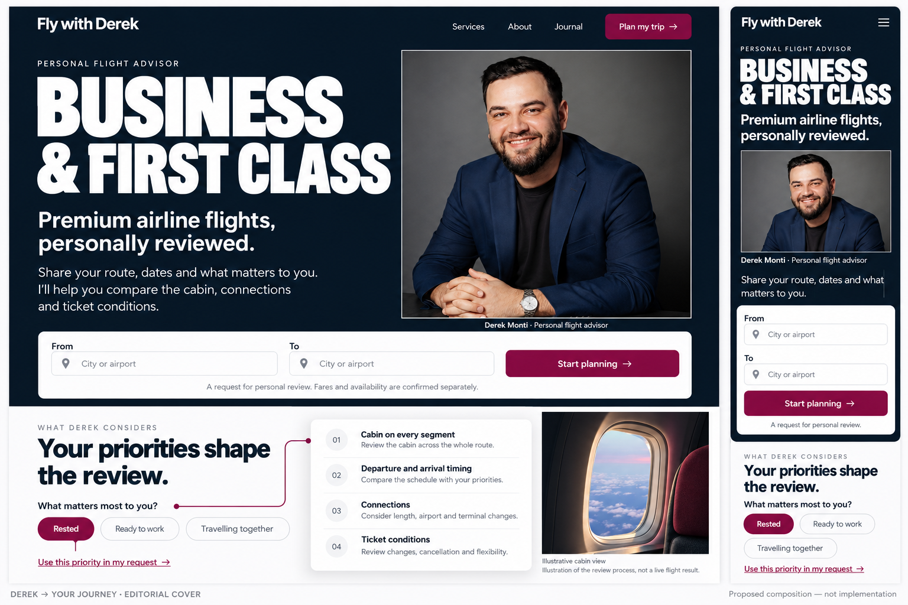
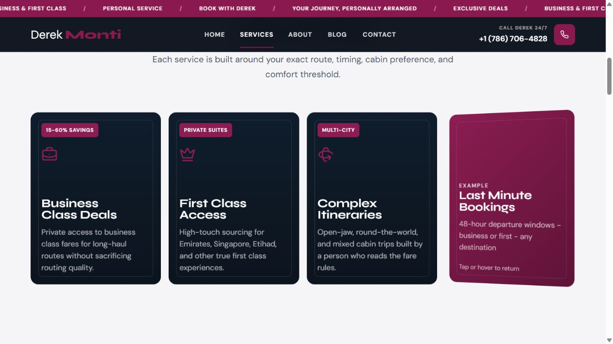
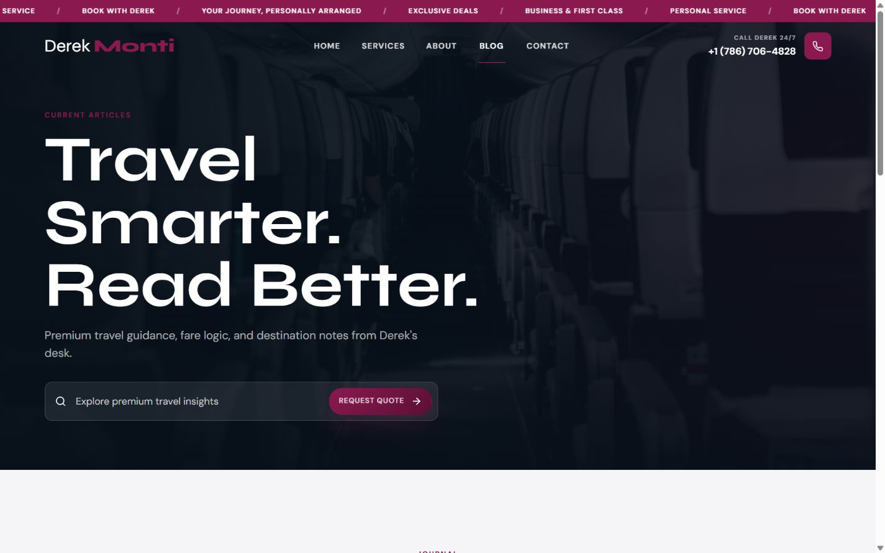
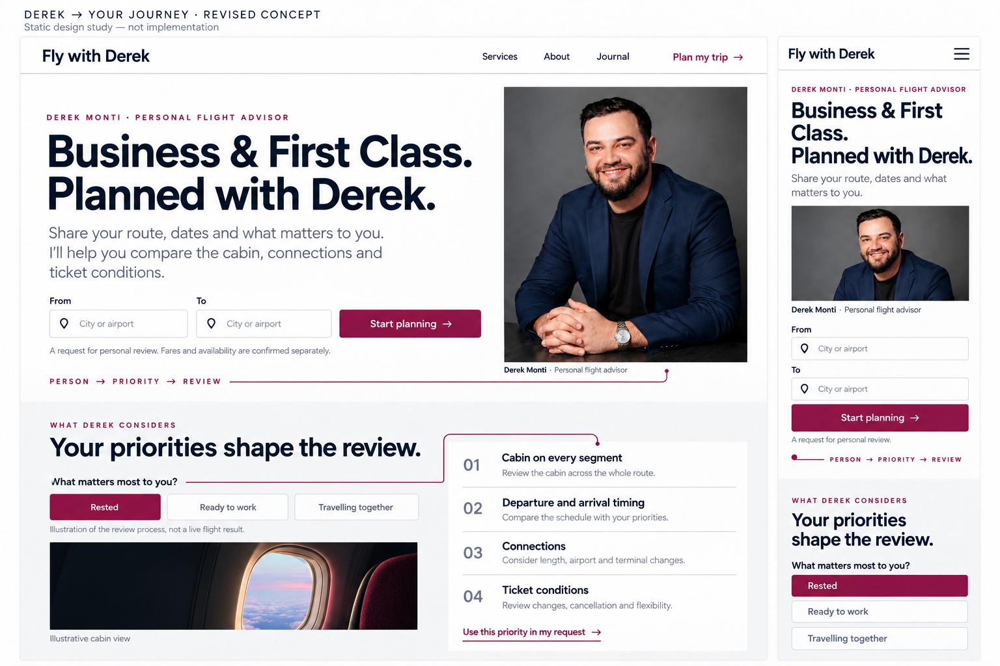

Derek → Your Journey
Persoana, prioritățile călătorului și analiza unui itinerariu Business/First Class devin aceeași poveste vizuală. Cardurile 3D rămân; identitatea și compoziția tuturor paginilor se unesc.
Direcția rezultă din analiza videoclipului, a site-ului actual, cercetare externă și contestarea reciprocă a ideilor. Două machete au fost respinse ca țintă vizuală finală. Varianta de mai jos este propunere de compoziție, nu site implementat.


Verdictul independent A/B: acceptă atmosfera navy/alb, categoria, portretul separat și cererea ancorată. V3 încă folosește un layout text-stânga/portret-dreapta și un font condensat; nu îl aprobă drept țintă finală „stunning”. În execuție, titlul trebuie să se întindă peste scenă, portretul să ocupe spațiul negativ, iar Syne/DM Sans și ordinea mobilă să fie verificate. Nu copiem literal rasterul.
O filmare autentică a lui Derek analizând un exemplu aprobat ar putea susține mai bine povestea decât portretul pozat disponibil. Diferențierea și utilizarea se verifică pe rezultatul real; nu promitem unicitate pe întreaga piață.
Un subiect puternic, nu o colecție de efecte.
În secvențele 11,2–15,2 s, obiectul, lumina, materialul, tipografia și mișcarea aparțin aceleiași scene. Pentru Derek, subiectul este o persoană care ajută la alegerea unei călătorii premium. Montajul nu dovedește tehnologia, viteza sau utilizabilitatea exemplelor.

Ce trebuie să se schimbe în site.
O singură identitate
Home și paginile secundare folosesc acum tratamente diferite. Un singur masthead, header, footer și ton trebuie să le unească.
Mai puțină repetiție
Home are 13 capitole după hero. Comprimăm introducerile și păstrăm numai întrebări distincte, alături de cererea reală.
3D cu un rol
Flip-ul dezvăluie detalii utile. Tilt-ul rămâne discret. Touch, tastatura și motion redus au aceleași informații și acțiuni.


Plan pentru toate cele 16 pagini existente.
| Familie | Direcție |
|---|---|
| Home | Copertă personală, analiză după prioritate, servicii 3D, contexte de călătorie, cerere, FAQ, selecție editorială. |
| Services | Patru dosare tactile: serviciu clar pe față, considerații și început de cerere pe verso. |
| About | Derek și informații verificabile, fără biografie, rezultate sau acreditări inventate. |
| Șapte pagini de planificare | Conținut și compoziție specifice subiectului; păstrăm URL-urile și sensul rutelor. |
| Journal și trei articole | Selecție editorială, fotografie, tipografie pentru citit, surse și timp de lectură real. |
| Privacy, Terms și 404 | Identitate comună, lizibilitate și recuperare clară. Textul juridic rămâne o decizie separată de aspect. |
SEO și securitate cu probe reale.
16 rute publice
În verificarea din 2 octombrie au răspuns 200, cu H1 și canonical. Robots/sitemap și 404 au baza corectă. Indexarea și pozițiile Google nu sunt cunoscute.
EN · RO · RU · DE
Păstrăm URL-urile engleze și localizăm grupuri complete, revizuite. Hreflang/canonical corecte, font Cyrillic și conținut util. Prima poziție la orice căutare nu poate fi garantată.
Risc Medium condiționat
Prioritate: protecția distribuită împotriva cererilor automate. Urmează deduplicarea retry-urilor și expirarea atomică. 47 teste au trecut; zero advisories npm în auditul read-only.
Nu s-au trimis leaduri sau emailuri reale și nu s-au citit valorile secrete. Testele izolate nu certifică protecția din producție. Performanța se va verifica pe buildul final, nu pe această imagine.
Efectul vechi a fost identificat.
Implementarea compatibilă este în c577596, din 25 mai 2026: 8 commituri în urmă față de HEAD verificat 699c3cf. Mai multe versiuni conțin același efect; filmul nu dovedește checkoutul exact. Restaurarea locală existentă este păstrată.
Analize, dezbatere și probe.
- Planul finalConținut, pagini, mișcare, execuție și criterii de acceptare.
- Analiza videoclipuluiTimeline, cadre și diferența dintre observație și inferență.
- Verificatorul ACritică de design, conținut și diferențiere.
- Verificatorul B și frontendCritică independentă, carduri, accesibilitate și bugete.
- Dezbaterea ideilorDe ce cabin-first nu rezolvă singur problema.
- SEO multilingvArhitectură, inventar, guvernanță și măsurare.
- SecuritateConstatări și probe simulate.
- Critica de securitateErori, retry, protecție și confidențialitate.
- Revizuirea vizuală AV2 structurală și verdictul condiționat pentru V3.
- Revizuirea vizuală BVerdict independent pentru V3 și corecții de execuție.
- Indexul probelorCapturi, controale publice, teste și limite.
- Promptul studiului editorialProveniență și cerințe, fără a ascunde explorarea generată.
Variantele respinse și motivele
V1: portret și cabină amestecate, layout convențional, formulări care sugerează rezultate garantate. V2: sens fotografic mai corect, însă prea apropiat de un template de consultant pentru ținta vizuală cerută.

Implementăm și verificăm rezultatul efectiv.
- Conținut/active verificate și sistem comun.
- Home și Services, apoi toate familiile de pagini.
- Securitate și cerere cu provideri simulați în QA.
- Localizare revizuită, SEO, tastatură/touch/motion redus și performanță.
- Verificare independentă pe site-ul implementat înainte de lansare.
Acest dosar livrează analiza și propunerea cerute. Nu modifică sursa produsului, nu resetează Git și nu publică site-ul.